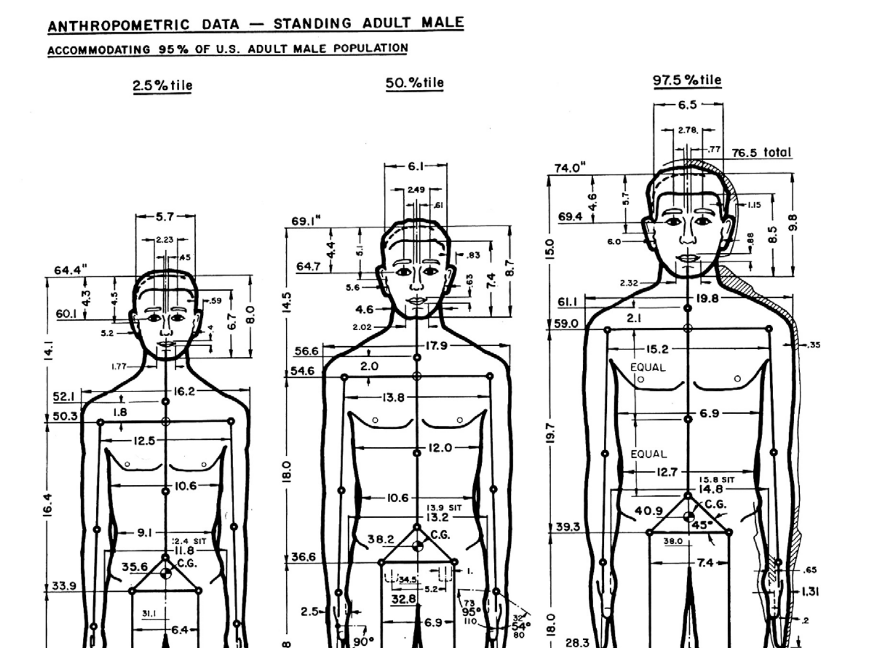
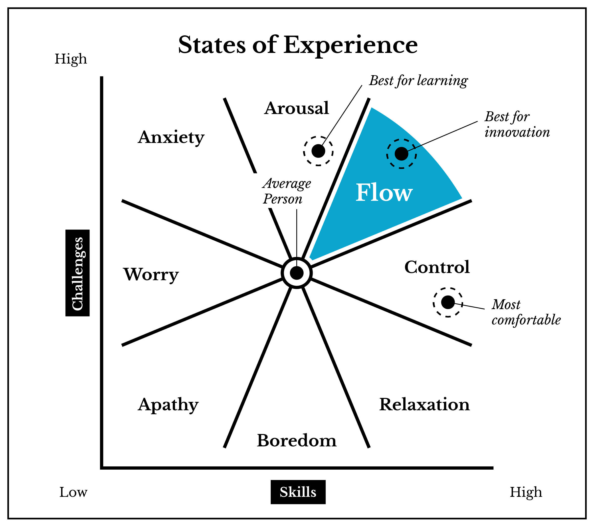

Interaction Design (IxD)
Designing for interaction is the process of understanding, accounting for, and sometimes altering a user(s) mental model (what they know and how they think) to facilitate a dialogue between that user and an object, system, or event. In this way, the designer shapes the user. This does not have to be software. You could be designing a conversation between two people by providing discussion topics, a voting ballot to reduce voter confusion and errors, or a new device to make virtual reality feel more like physical reality.
... changes will be realized by designers, and by a specific breed of designers: those creative designers who are both artists and engineers and who are able to balance, over an extended period of time, technology and aesthetics without ever losing sight of the most important facet of design: humanity. [3]
Consumer product design is located in a field called Industrial Design, a term coined in the early 20th century. In the mid-20th century, ergonomics, or the interaction between people and equipment, emerged. After microcomputers were invented, product design began to include software. This shifted design away from ergonomics into interaction design.
To design an interaction, a designer must seek to know:
- True goals of the interaction (this is sometimes different than stated goals)
- Users' abilities, constraints, and mental models
- Where and how it will happen
- Constraints of the environment it's happening in
- How the interaction went
Users
Image from The Measure of a Man: Human Factors in Design by Henry Dryfuss
The term "user" is meant to describe a person who is intended to interact with something that you are designing, be it software or physical object. The idea of "average users," as they are conceptualized by designers, tend to not be very good representations of the real people who use the products. The U.S. Air Force found this out first-hand as they attempted to solve major flight issues in the 1950s. Pilots were having a lot of incidents, sometimes fatal, and they started to wonder if the dimensions of the cockpit, built to the average size of a 1926 male pilot, were no longer working. They took measurements of over 4,000 people with 140 dimensions of measurement.
Lt. Gilbert S. Daniels had studied physical anthropology at Harvard, and was hired to measure the pilots. He garnered skepticism of averages during his undergraduate work, and wondered how many pilots actually fit the average measurements. After crunching the numbers for the 10 most relevant dimensions, he discovered that not a single average airman existed, and using only three of the 10 dimensions, roughly 3.5% matched the average. This discovery upended the assumptions that an average-sized cockpit would fit most pilots. There was no average-sized pilot. This revelation eventually led to the advent of adjustable cockpit seats and pedals, dramatically reducing flight incidents.
Flow
The flow was named by Mihály Csíkszentmihályi, a Hungarian psychologist. Flow is a kind of mental state where a person is completely immersed in concentration and focus when performing some action. In interaction design, you typically want your users to be able to access the flow state.
Csikszentmihalyi's characteristics of flow:
- Completely involved in what we are doing—focused, concentrated.
- Sense of ecstasy—of being outside everyday reality.
- Great inner clarity—knowing what needs to be done, and how well we are doing.
- Knowing that the activity is doable—that our skills are adequate to the task.
- A sense of serenity—no worries about oneself, and a feeling of growing beyond the boundaries of the ego.
- Timelessness—thoroughly focused on the present, hours seem to pass by in minutes.
- Intrinsic motivation—whatever produces flow becomes its own reward.
Ted: Mihaly Csikszentmihalyi: Flow, the secret to happiness (18:51)

Interaction Principles
Human-computer Interaction (HCI) is a field that emerged in the 1980s, concerned with the engineering and cognitive science implications for human use of technology. Over a decade earlier in 1968, Douglas Engelbart gave a technology presentation which was later referred to as "The Mother of All Demos." In a single presentation, Engelbart showed the computer mouse, word processing, video conferencing, hyper-text and media, addressable objects, collaborative real-time editing, and other aspects of computing that are now ubiquitous. This was a major turning point in computing technology history. Another major turning point was the 1984 introduction of the Macintosh by Apple Computer, Inc., which had the first 2D graphical user interface, otherwise known as a GUI (pronounced gooey).
There are five common interaction principles that software developers often refer to when building an interface. They dictate that an interface must be perceivable, predictable, learnable, consistent, and provide feedback to the user. Being perceivable means that a person, who has no prior knowledge, must be able to sense and understand an object or interface. For GUI design, this often means making the interaction possibilities visible in some way. Humans rely on predictions to navigate the world. An unpredictable environment can be frustrating, scary, and in some cases, dangerous. Design language can be used to give users cues and resources for learning. Elements that perform the same action should look and function the same way. This not only refers to visual and physical elements, but also to sound, language, and conceptual organization. Feedback is important in an interface so the user knows that something is happening.
Affordance theory
Affordance theory is concerned with the idea that the possibility for action is embedded in objects and shapes. Affordances are the things that can be achieved with the object in question by a particular person. Designers spend a great deal of time perfecting signifiers, so they may communicate what affordances exist very explicitly. For instance a coffee mug with a handle is explicitly telling the user (signifying) that it can be picked up by hand (affordance), and will keep the hand safe from hot temperatures (another affordance). Doors with improperly designed signifiers do not make it clear which way a door should swing.
Rather famously, Don Norman was so put off by bad doors that he wrote the book, "The Design of Everyday Things."
An excerpt from The Design of Everyday Things: Revised and Expanded Edition, page 11,
The term affordance refers to the relationship between a physical object and a person (or for that matter, any interacting agent, whether animal or human, or even machines and robots). An affordance is a relationship between the properties of an object and the capabilities of the agent that determine just how the object could possibly be used. A chair affords (“is for”) support and, therefore, affords sitting. Most chairs can also be carried by a single per- son (they afford lifting), but some can only be lifted by a strong person or by a team of people. If young or relatively weak people cannot lift a chair, then for these people, the chair does not have that affordance, it does not afford lifting.
From Norman's description, we can start to see a strong relationship between semiotics and inclusive design practices.
Citation
- Adapted from: http://myweb.lmu.edu/dondi/share/ixd/ixd-overview.pdf
- Hogue, David M., Interaction Design Fundamentals. Lynda.com. https://www.lynda.com/Dreamweaver-tutorials/Welcome/82822/97965-4.html
- Thoughts on Interaction Design
- The Measure of a Man: Human Factors in Design. Henry Dryfuss. 1966. Accessed 3/27/2017. http://design.data.free.fr/RUCHE/documents/Ergonomie Henry DREYFUS.pdf